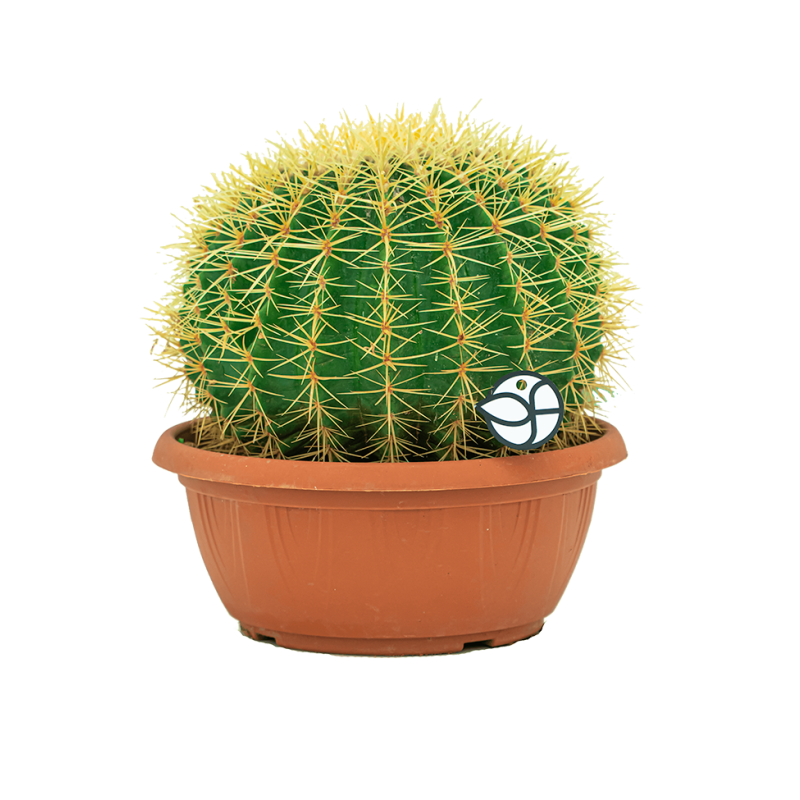

Cuidado de un Cactus
Los cactus son plantas que no requieren de muchos cuidados, pero estas son algunas recomendaciones.
- Debe Ubicarse en un lugar con buena ilumicación
- No necesitan mucho riego
- De preferencia macetas anchas y profundas
- Trasplantar una vez al año

Cuidado de los Tulipanes
Los Tulipanes son plantas que normalmente son plantadas en otoño para que crezcan fuertes. Estos son algunos de sus cuidados:
- Preferentemente mantenerlos en temperaturas de 13-16°C
- Abonarlos una vez cada 30 dias
- Controlar el riego
- Evitar la sobreexposición de luz